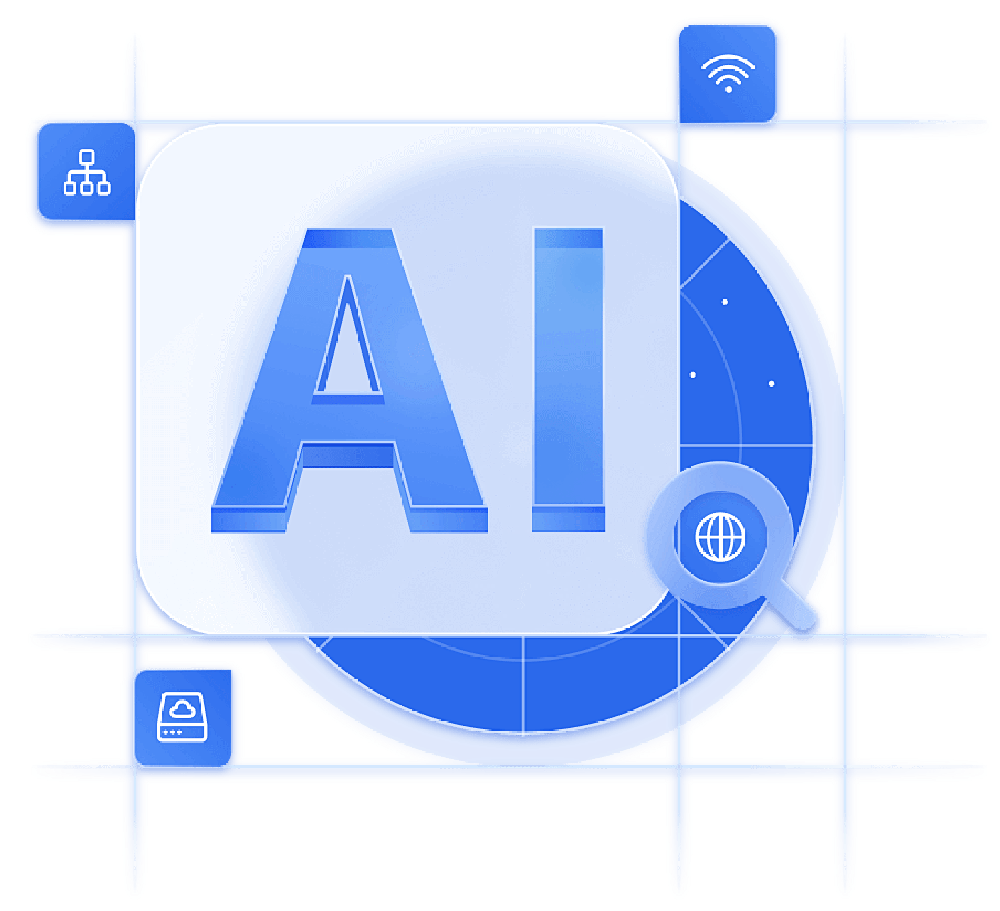

AI 知识库不仅是工具，更是企业不可或缺的智慧知识官。能够理解企业的文档资料、业务流程和专业知识，在用户提问时快速提供准确的答案。

我们致力于通过AI技术，为您的企业知识管理带来革命性提升。
智能响应，秒级触达
快速响应查询，节省人工检索的时间，提高工作效率。
深度理解，准确无误
基于语义理解技术和上下文关联检索，准确回答问题，避免信息偏差。
自动服务，降本增效
减少人工客服投入，自动化处理常见问题，降低人力成本。
如与人言，流畅自然
从被动查询转向主动问答，支持多轮对话澄清，实现自然交互体验。
用 AI 的方式解决传统客服服务时长受限、人力成本高、服务质量参差不齐、服务知识难于沉淀迭代等问题。
7x24小时智能回答招生政策，大大降低人工咨询量。
即时提供故障诊断和维修指导，减少停机时间。
专业症状初筛和就医指南，减轻医护咨询负担。
智能知识服务，精准高效，专注知识价值释放。
静态文档存储，操作复杂，知识利用率低。